Metronome Synchronization on Moving Platform
This example shows the phenomenon of metronomes synchronizing if they are placed on a platform that is free to slide back and forth. This is an example of a system that follows the Kuramoto model.
Contents
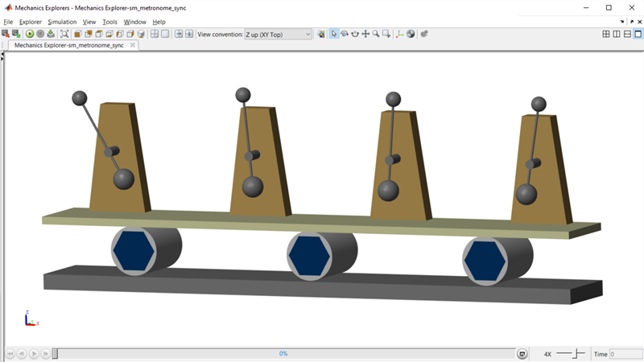
Model
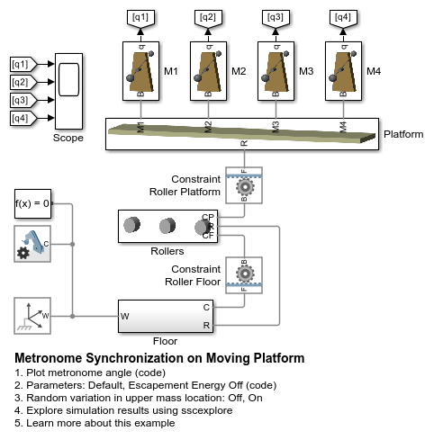Simulation Results from Simscape Logging
In the first test, we start all of the metronomes at initial angles and speeds. The amplitudes and frequencies settle to the same values due to the energy added by the escapement mechanism (modeled abstractly) and pendulum damping. At the start of the test, all pendula are out of phase, and the platform is locked in place.
After a period of time, the platform is allowed to slide back and forth. Over time, the oscillations of the metronomes become synchronized, so that they are exactly in phase. With different settings, the metronomes could also be exactly out of phase.
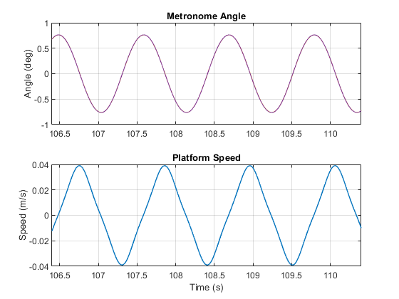Simulation Results from Simscape Logging: Escapement Energy Off
In the second test, we turn off the abstract model of the energy added by the escapement mechanism and the friction in the pendula. Even if we let the simulation run for a much longer time, the metronomes will not synchronize. This shows that nonlinear effects are necessary to model certain phenomena.
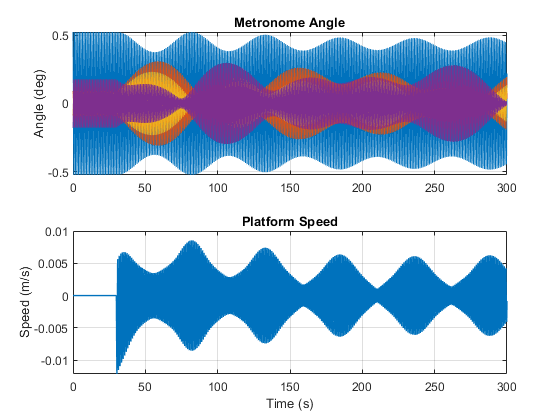 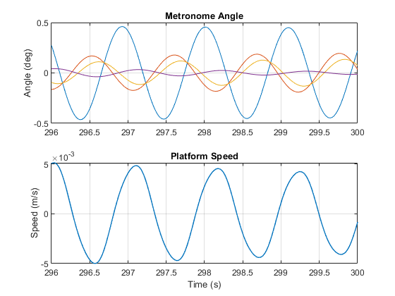Simulation Results from Simscape Logging: Many Rows
This test has 28 metronomes arranged in 7 rows. Platform is constrained to only move along a single axis.
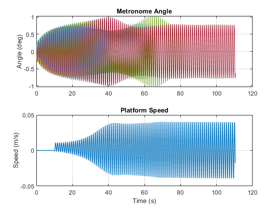 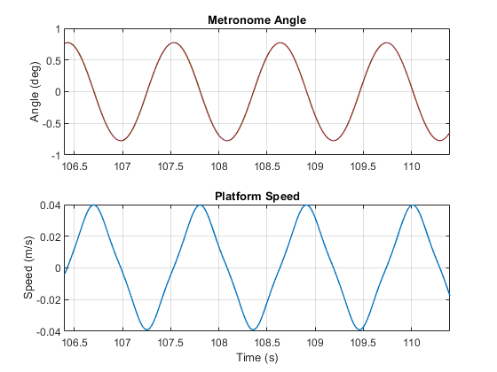Simulation Results from Simscape Logging: Many Rows, Unconstrained
This test has 28 metronomes arranged in 7 rows. The platform can now move within a plane (translation in x and y, rotate about z).
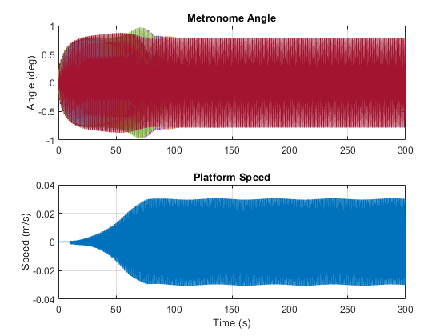 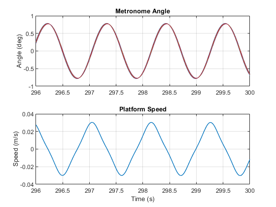Simulation Results from Simscape Logging: Many Rows, Tolerances
This test has 28 metronomes arranged in 7 rows. Platform is constrained to slide in x, and the metronomes have a random offset for the upper mass.
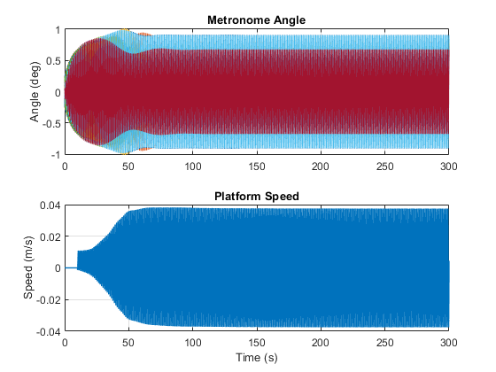 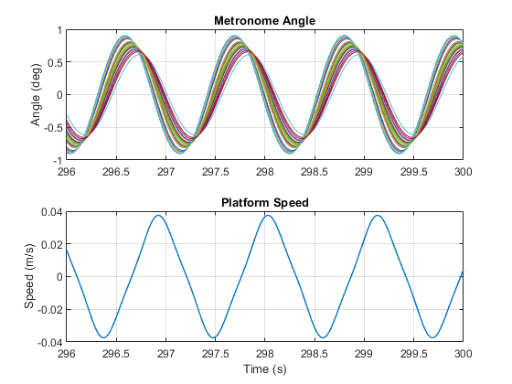